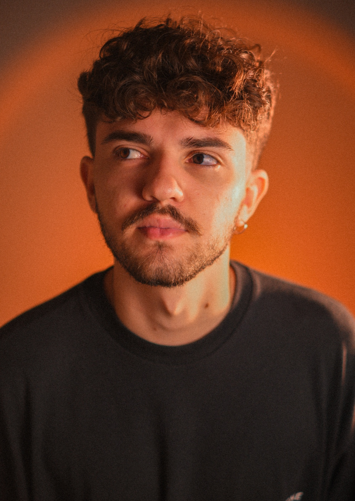

Guilherme
Ricco
Designer
Um designer que enxerga a marca além da estética, e a comunicação além do visual.
O design sempre foi mais do que criar algo bonito para mim. Ao longo de mais de 5 anos de experiência, atuei no desenvolvimento de identidades visuais, branding, campanhas publicitárias, conteúdo para redes sociais, catálogos, motion design e fotografia, ajudando empresas a construírem marcas mais fortes e memoráveis.
Graduando em Design Gráfico, busco unir estratégia, criatividade e propósito em cada projeto. Minha experiência me permitiu trabalhar com negócios de diferentes segmentos, entendendo que cada marca possui desafios, objetivos e histórias únicas. É dessa combinação entre visão estratégica e sensibilidade criativa que surgem as soluções que desenvolvo.
Hoje, meu trabalho vai além da criação visual. Acredito que uma marca bem construída precisa comunicar com clareza, gerar conexão e criar valor em cada ponto de contato com seu público. Por isso, busco desenvolver projetos que não apenas representem empresas, mas que contribuam para seu crescimento.